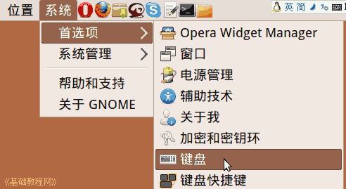
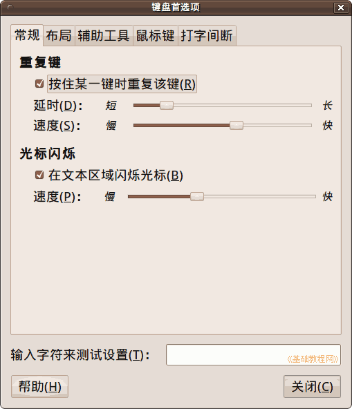
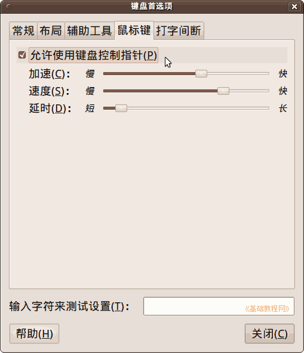
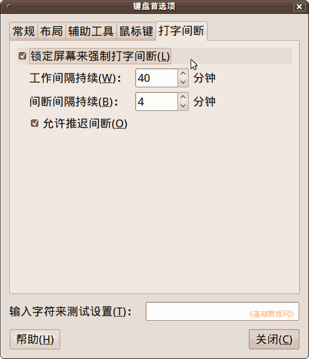

Ubuntu/GNOME 桌面程序指南
作者：TeliuTe 来源：基础教程网
十八、键盘首选项 返回目录 下一课键盘首选项中，可以设置按键速度，辅助工具，控制鼠标和打字间断等；
1、首选项
1）点菜单“系统 - 首选项 - 键盘”，打开键盘首选项，新版12.04的参考：lesson73 lesson66

2）在“常规”标签段中，可以设置重复速度和光标闪烁，根据习惯调整快慢；

3）布局一般默认，辅助工具在15课已介绍，
在“鼠标键”中可以允许数字小键盘控制鼠标指针，要关闭 Num Lock 数字指示灯；

4）打字间断 是一个很好的功能，可以让您在使用电脑一断时间后，锁定屏幕休息一会；

5）选中后，在面板通知区域会有一个指示器，用颜色指示时间，要想推迟时间，可以勾选“允许推迟”，还可以在中断前点右键 - 首选项，重新设置时间；
本节学习了键盘首选项的基础知识，如果你成功地完成了练习，请继续学习下一课内容；
本教程由86团学校TeliuTe制作|著作权所有
基础教程网：http://teliute.org/
美丽的校园……
转载和引用本站内容，请保留作者和本站链接。